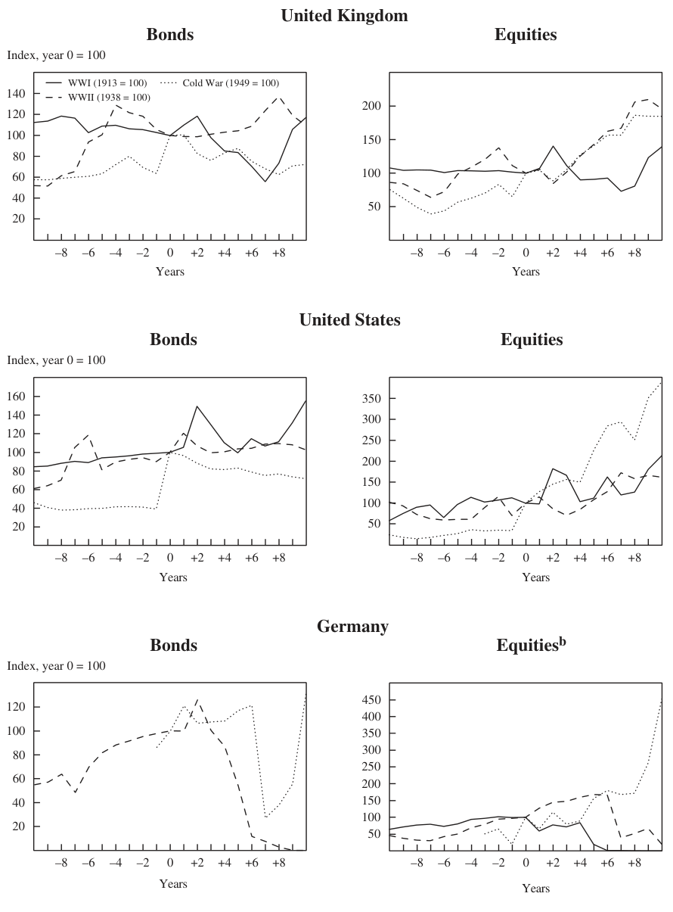

Earning from History? Financial Markets and the Approach of World Wars — Part 1/7: Comparing World Wars
NIALL FERGUSON
Harvard University
ABSTRACT Are world financial markets paying due heed to geopolitical risk? Despite unchallenged U.S. military supremacy, the financial consequences of a terrorist nuclear strike, or war in the Middle East or the Taiwan Strait—or some totally unforeseen conflict—could still be enormous. That globalization under a powerful hegemon has strengthened linkages among national economies may not rule out another major war: such linkages were also strong on the eve of World War I, which thus caught investors off guard. Investors try to learn from history, but the very different financial impacts of the two world wars and the Cold War reveal the tendency of military technology and regulatory regimes to shift significantly, reducing the relevance of past experience. Any lessons investors might take from the last war could have limited relevance for the next—or be forgotten after a generation of relative peace has led to complacency.
We have been living through a paradox. Since September 11, 2001, according to a number of neoconservative commentators, America has been fighting World War III (or IV, to those who like to give the Cold War a number). For more than six years these commentators have repeatedly drawn parallels between the “War on Terror” that is said to have begun in September 2001 (or earlier) and World War II. Immediately after 9/11, al Qaeda and other radical Islamist groups were branded “Islamofascists.” Their attack on the World Trade Center and the Pentagon was said to be this generation’s Pearl Harbor. In addition to coveting weapons of mass destruction and covertly sponsoring terrorism, the Iraqi dictator Saddam Hussein was denounced as an Arab Hitler. The fall of Baghdad was supposed to be like the liberation of Paris. Anyone who opposed the policy of preemption was an appeaser. And so on.1
1. See, for example, Podhoretz (2007).
431
432 Brookings Papers on Economic Activity, Spring 2008
Yet throughout this period of heightened terrorist threats and overseas military interventions, financial markets appear to have displayed a remarkable insouciance about political risk. The U.S. stock market was affected only momentarily by the attacks of 9/11. True, between September 10 and September 21, 2001, the Dow Jones Industrial Average declined by as much as 14 percent. Within just over two months, however, the Dow had regained its pre-9/11 level. And although 2002 was a disappointing year for U.S. equity investors, the market surged ahead thereafter, exceeding its previous peak (at the height of the “dot-com” mania) in the fall of 2006. By October 9, 2007, the Dow stood at nearly double the level it had reached in the trough five years before. Nor was the U.S. stock market by any means the outstanding performer in the period after 9/11. In the five years to July 31, 2007, all but two of the world’s equity markets delivered double-digit returns on an annualized basis. Among the ten best performers were Egypt (+69 percent a year), Turkey (+44 percent), and Indonesia (+39 percent), all countries with large, overwhelmingly Muslim populations. The United States, with a 9.9 annualized percentage gain, was in fact among the two worst performers, the other being Israel’s nondomestic market (9 percent).2
If, as readers of Samuel Huntington were led to believe, a “clash of civilizations” between Islam and the West was under way during this period,3
Western investors would have done well to back the other side.
The worldwide boom in asset prices between 2002 and 2007 was not confined to equity markets. Emerging market bonds also rose strongly, driving down spreads over U.S. Treasury bonds to record lows. Real estate markets, especially in the English-speaking world, also saw remarkable capital appreciation. Whether they put their money in commodities, works of art, vintage wine, or exotic asset-backed securities, investors made money. The principal forces at work—above-average global economic growth, a secular redistribution of factor incomes from labor to capital, the liquidity generated by the recycling of Asian savings and petrodollars— effectively swamped political concerns.4 Even the extraordinary quintupling in the price of oil that occurred between September 2001 and the time of this writing (May 2008) can be attributed only partly to geopolitical factors such as instability in Iraq or the risk of war between the United States and Iran. The growth of Asian (and especially Chinese) demand for
2. Data are from MSCI Barra (www.mscibarra.com/products/indices/stdindex/ performance.jsp). The Israeli nondomestic index tracks Israeli stocks listed in the United States.
3. Huntington (1996). 4. On the international recycling of savings, see Ferguson and Schularick (2007). Of course, asset prices might have risen still further in the absence of the war on terror and associated political risks.
NIALL FERGUSON 433 oil has been a significantly more important factor, as has the depreciation of the currency in which oil is priced, to say nothing of the limits on global oil refining capacity.
Readers of the news pages of the New York Times could be forgiven for thinking that the world was descending into an abyss of strife. Yet readers of the business pages had the impression—until August 2007—that they were living, like Voltaire’s Dr. Pangloss, in the best of all possible worlds. While the front section of the paper was a doleful chronicle of death and destruction, the middle section was a euphoric catalogue of CDOs, IPOs, and LBOs. What Charles Dickens said of “the year of Our Lord one thousand seventeen hundred and seventy-five” in A Tale of Two Cities seemed also to apply to the six years after 9/11: “It was the best of times, it was the worst of times.” In a number of lectures, papers, and newspaper articles, the first of which appeared in 2005, I sought to explain what I called “the paradox of diminishing risk (perception) in a dangerous world.”5 I drew a parallel with the period immediately before the First World War, when, I suggested, geopolitical risks had been all too real, but financial markets had been lulled into a false sense of security by bountiful liquidity. A similar point was made in a widely reported speech by Lawrence Summers at the 2007 World Economic Forum in Davos, Switzerland.6
A liquidity crisis did indeed strike financial markets shortly after that. But it was due not to an escalation of violence in the Middle East—that had happened in Iraq and Lebanon in 2006, with negligible financial consequences—but to defaults in the U.S. subprime mortgage market and their aftereffects on the markets for asset-backed securities, commercial paper, and interbank loans. Even before JPMorgan Chase and the Federal Reserve stepped in to bail out Bear Stearns’ creditors (and to a lesser extent its shareholders) in March of this year, some commentators were suggesting that it was 1907, not 1914, all over again.7 Political risk, once again, seemed irrelevant.
The possibility nevertheless remains that investors are continuing to ignore a quite separate threat to financial stability. As the 1930s demonstrated, purely financial crises are not the only events deserving of investors’ attention; geopolitical crises can be equally devastating to financial markets. In fact, the former may make the latter more likely by creating socioeconomic and political pressures that encourage violent behavior by governments.
5. Ferguson (2005a, 2007b). 6. See, for example, John Fraher, “Summers, Trichet Warn Davos Party-Goers They Underestimate Risk,” Bloomberg, January 22, 2007.
7. On the financial panic of 1907, see Bruner and Carr (2007).
434 Brookings Papers on Economic Activity, Spring 2008
One obvious objection to analogies with the world wars is that the geopolitical risks the world currently faces are in fact quite small. Compared with previous world conflicts, “World War IV” has been a fairly trifling affair so far. The radical Islamists have at most thousands rather than the millions of trained warriors that were at the disposal of imperial Germany, the Third Reich, imperial Japan, or the Soviet Union. Their most dangerous weapons are car bombs and rocket-propelled grenade launchers, not tank divisions, aircraft carriers, strategic bombers, or intercontinental ballistic missiles. The total number of American fatalities that can be attributed to the War on Terror is not much more than 7,000 (adding together the 9/11 victims with U.S. passports, the service personnel killed in action to date in Iraq and Afghanistan, and the nonmilitary contractors who have died in Iraq). By contrast, the Axis powers killed around 20,000 Allied soldiers and civilians a day, on average, during World War II. Another way of making essentially the same point is to compare the average contemporary American’s lifetime risk of death from war (1 in 134,631) with his or her risk of death from a road accident (1 in 84) or cancer (1 in 4.5).8 True, terrorism inflicted economic damage as well as loss of life on September 11, 2001, extending far beyond the destruction of two towers, four aircraft, and a part of the Pentagon. Nevertheless, as measured by insurance claims, the total costs to the United States due to terrorism amounted to at least $24 billion between 1984 and 2004; the costs attributable to natural disasters in the same period were $188 billion, nearly eight times as much.9 Really big cross-border terrorist attacks remain very rare. Between 1968 and 2007, 6 percent of recorded incidents accounted for nearly half (46 percent) of fatalities attributable to international terrorism. In only one month since records began to be kept (September 2001) has international terrorism killed more than 3,000 people. The next most dangerous month (October 2002) claimed just over 500.10 What is more, by some measures at least, war itself is in decline. According to the annual audit of global conflict published by the Center for International Development and Conflict Management at the University of Maryland, the number of wars and the casualties caused by them have declined over the past twenty years.11
Nevertheless, it would be a mistake to conclude from all this that the potential for a major geopolitical shock is nonexistent. The same report
8. See the statistics at “The Odds of Dying from . . . ,” www.nsc.org/research/odds.aspx, and at www.cancer.org.
9. “Taking Cover,” The Economist, June 16, 2005. 10. Author’s calculations from data available at www.terrorisminfo.mipt.org/ incidentcalendar.asp.
11. Hewitt, Wilkenfeld, and Gurr (2008).
NIALL FERGUSON 435 goes on to observe that “a larger portion of the global community of states is involved [in war] now than in any other time in the past six decades. And the historic low of 19 ongoing armed conflicts in 2004 was followed by an increase to 25 in 2005. . . . Moreover, an unusually large number of ‘new’ conflicts began in 2005–2006.”12 The most likely theater for a major conflict, the Middle East, is the world’s principal source of oil. An escalation and spread of Iraq’s internecine strife, or an American confrontation with Iran over the latter’s nuclear program, would have a substantial and immediate impact on already stretched energy prices. Likewise, the possibility cannot wholly be ruled out of a military clash between the United States and China over Taiwan, if the People’s Republic were to attempt to use force to snuff out Taipei’s aspirations to formal independence. Given its present military supremacy, the United States plainly could not lose such a war, but the economic consequences would be highly disruptive, in view of the continuing reliance of many Chinese exporters on the American market, and the continuing benefit derived by the United States from China’s accumulation of dollar-denominated bonds and bills in its international reserves. Finally, one unintended geopolitical consequence of globalization has been to enrich a number of states that cannot be regarded as innately friendly to the United States: not only fundamentalist Iran but also Communist China, authoritarian Russia, and populist Venezuela.
In contrast to previous epochs, the United States does not need to confront a military near-equal to suffer serious damage. One nuclear weapon in the hands of a few fanatics could obliterate a city, making the impact of Hurricane Katrina on New Orleans pale into insignificance. The breakdown of the forty-year-old system of nuclear nonproliferation is increasing the risk that terrorists will obtain such a weapon. And given the relatively limited impact of the 2001 attacks, al Qaeda has a strong incentive to attempt a “nuclear 9/11.”13 The organization’s spokesmen do not deny this; on the contrary, they openly boast of their ambition “to kill 4 million Americans—2 million of them children—and to exile twice as many and wound and cripple hundreds of thousands.”14 This cannot be dismissed as mere rhetoric. According to Graham Allison, “if the US and other governments just keep doing what they are doing today, a nuclear terrorist attack in a major city is more likely than not by 2014.”15 In the view of Richard Garwin, one of the designers of
12. Hewitt, Wilkenfeld, and Gurr (2008, p. 1). 13. For a compelling case that the “War on Terror” poses a much greater threat than past experience would lead one to expect, see Bobbitt (2008, especially pp. 98–179).
14. Suleiman abu Gheith, quoted in Bobbitt (2008, p. 119). 15. Allison (2008). See also Allison (2004).
436 Brookings Papers on Economic Activity, Spring 2008 the hydrogen bomb, there is already a 20 percent per year probability of a nuclear explosion in an American or a European city. Another estimate, by Matthew Bunn, puts the odds of a nuclear terrorist attack over a ten-year period at 29 percent.16 Even a small, 12.5-kiloton nuclear device would kill up to 80,000 people if detonated in an average American city; a 1.0-megaton hydrogen bomb could kill as many as 1.9 million; a successful biological attack using anthrax spores could be nearly as lethal.17
There is, in short, little prospect of the world’s achieving Kant’s perpetual peace any time soon. On the contrary, some serious scholars of international security see the United States as more vulnerable to a nuclear attack today than at any time during or since the Cold War, for the simple reason that nongovernmental entities like al Qaeda cannot be deterred in the way that state actors can be. The implication is clear. Easy though it is to ridicule the notion of the “War on Terror” as “World War IV,” the parallel is on closer inspection legitimate. The current war really does have the potential to inflict more harm on American civilians and more destruction to property on the American mainland than any previous conflict. And that, in turn, must have economic as well as security implications. To repeat: simply because financial crises frequently occur for nongeopolitical reasons does not mean that political risk can be ignored. The financial crisis of 1907 was a big one, no doubt; 1914, as we shall see, was much bigger.
Comparing World Wars
This paper asks what history can teach us about the impact of big geopolitical shocks on financial markets. It looks mainly at the London and New York markets for bonds, stocks, currencies, and commodities. It does not concern itself with the many small wars that have happened and continue to happen.18 It instead focuses exclusively on three world wars (or rather, two world wars and one near miss): the First World War, the Second World War, and the early Cold War. The rationale is that the economic consequences of big wars remain relatively understudied by comparison with those of big financial crises. The impacts of both kinds of crisis are not normally distributed but appear to obey something like a power law: a plot of the destructiveness of wars against the frequency of their occurrence would look more like a straight line than a bell curve.19 But whereas
16. Both Garwin’s and Bunn’s estimates are cited in Allison (2008). 17. Intriligator and Toukan (2006, table 4.1A). 18. On the incidence of war, see the review of the literature in Ferguson (2000, ch. 1). 19. See Buchanan (2000).
NIALL FERGUSON 437 there has only been one Great Depression, there has been more than one world war, with comparably devastating losses of output in many of the combatant countries, and comparably large declines in asset prices even in markets far from the fighting.20 The importance of wars, and especially world wars, is highlighted by the contribution of Robert Barro and José Ursúa to this volume: of the roughly seventy consumption and output “disasters” they identify for OECD countries, about one-third were warrelated, of which a clear majority were world war–related. For non-OECD countries the proportion of war-related disasters is smaller but still significant.21 For the sake of convenience, economists tend to treat wars as “exogenous shocks.” From the historian’s standpoint, however, there are important differences between the impact of meteors from outer space or lethal pandemics and the impact of wars.22 War is not exogenous, but the endogenous prime mover of the historical process—“the father of all things,” as the philosopher Heraclitus said.
Each of these conflicts was quite distinctive, of course. The First World War was primarily a European (and Middle Eastern) conflict, although many non-Europeans became involved in it. The Second World War was more global in its extent and was roughly five times more destructive in terms of loss of life, not least because both sides systematically targeted civilians. The “Third World War” did not actually happen (other than as a succession of bloody proxy wars, which might be called the Third World’s War), although there was ample reason to fear another world war when conflict erupted in Korea in 1950 and, most historians argue, when the Soviets sought to turn Cuba into a nuclear missile base in 1962. There was also considerable variation in the direct threats of destruction posed by these wars to the United Kingdom and the United States. The latter was not threatened in either the First or the Second World War, but it became increasingly vulnerable to Soviet intercontinental ballistic missiles as the Cold War went on and the size and sophistication of the Soviet nuclear arsenal grew. London faced a small risk of air attack in the First World War, was heavily bombed by the German Luftwaffe in the Second World War, and would probably have been a target in an all-out hot war with the Soviet Union.
Direct physical destruction is not, however, the sole threat that a world war poses. Because of the mobilization of manpower and resources neces-
20. For example, German occupation reduced GDP in France and the Netherlands to below 60 percent of the 1938 level (Ferguson 2007a). For evidence on the disruption to stock markets due to war, see Jorion and Goetzmann (1999).
21. Barro and Ursúa (this volume, table 9). 22. Posner (2004, especially pp. 73–84).
438 Brookings Papers on Economic Activity, Spring 2008 sary to wage conventional conflicts in the first half of the century, world war had profound implications even for investors who were themselves far from the battlefields, simply because of its impact on the relative prices of labor, capital, commodities, and manufactures. Similarly, the devastation inflicted on much of continental Europe during the First and especially the Second World War—which would have been exceeded in the event of a nuclear Third World War—had financial implications for any investor or institution with assets in the affected countries.
As the summary data in figure 1 show, the economic and financial effects of these three big conflicts also varied considerably. In terms of output, the First World War had the most deleterious effect on the British economy, and the Second World War the most positive effect on the American economy. British consumer prices rose by approximately the same amount in all three wars, although inflation was more volatile in the first; the United States experienced much higher inflation in the aftermath of the First World War, followed (as in Britain) by a sharp deflation. Government controls on the capital market explain the relatively modest rise in British long-term interest rates in the First World War and the decline that occurred in the Second World War. U.S. longterm rates were also artificially depressed, following a course similar to that of British rates in the First World War, but remaining lower in both the Second World War and the Korean War.
Figure 2 summarizes total returns on government bonds and equities for Britain and the United States as well as for Germany over the same three periods. In each case the data are expressed in inflation-adjusted sterling terms, to capture the vantage point of the average London investor who, for most of the past hundred years, has typically been more international in outlook than his or her American counterpart. British government bonds produced disappointing returns in the First World War and the Korean War, but moderately good returns in the Second World War. Holding U.S. government bonds was a progressively worse strategy in each successive war. Holding German government bonds in wartime was disastrous in three cases out of three, although the failure of the Korean War to become a world war (which would have devastated Germany) meant that investors recouped their losses in the last case.23 German equities did more or less as badly in the
23. Losses on German assets after the First World War were not as total as figure 2 suggests. In 1923 Reichsmark-denominated assets were indeed worthless, because hyperinflation had destroyed the German currency, but the currency reform of 1924 and subsequent revaluation legislation partly restored the value of (for example) bonds issued before the war, and most companies that survived the 1923 crisis published “goldmark”-denominated balance sheets that to varying degrees restored the capital of equity- and bondholders.
NIALL FERGUSON 439
Figure 1. U.K. and U.S. GDP, Consumer Prices, and Long-Term Bond Yields in Three World Wars

Sources: Bank of England; Carter and others (2006, table Ca9-19); Federal Reserve Bank of St. Louis; Homer and Sylla (1996).
440 Brookings Papers on Economic Activity, Spring 2008
Figure 2. Real Performance of U.K., U.S., and German Government Bonds and Equities in Three World Warsa

Source: Global Financial Data. a. All indexes reflect total returns in sterling terms, adjusted for consumer price inflation. b. Index is for the German domestic market and reflects the limited choice open to German investors because of capital controls and restrictions on new equity issues.
NIALL FERGUSON 441 world wars, but they outperformed British and American equities in the post–Korean War years. (However, it was next to impossible for a British investor in the 1930s to trade into or out of the German stock market.) British equities performed poorly in the First World War but produced higher real returns in the Second World War and the Korean War. The U.S. market performed better than the British market in the First World War and much better in the Korean War but—surprisingly—worse in the Second World War.
In short, there is no simple recurrent pattern. U.S. stocks and bonds produced the best returns in the First World War relative to British and German assets. U.K. stocks, followed by U.S. stocks, produced the best returns in the Second World War. But German stocks, which had been a disastrous investment in both world wars, ended up outperforming those of the other two countries in the wake of the Korean War.
The core argument of this paper is that, having been taken by surprise in 1914, investors did try to learn from history in the late 1930s, but (to borrow a phrase from the British historian A. J. P. Taylor) they mainly learned how to make new mistakes, since the lessons of the previous war proved to have only limited relevance to the next one. Something similar happened in 1950. A more tentative suggestion is that investors tended to learn only from relatively recent history. After a world war had receded by more than about twenty-five years, it ceased to affect behavior.
The organization of the rest of the paper is chronological. The next section shows how the majority of investors in London, then the world’s biggest capital market, were caught unaware by the escalation of the conflict in the Balkans in July 1914—so much so that a very severe liquidity crisis occurred in most financial centers even before war had broken out. The second section argues that the origins of the First World War have been revealed only with the benefit of hindsight; at the time, they were largely invisible. The same, however, cannot be said of the Second World War, discussed in the third section. Investors had learned from the searing experiences of 1914–23, which had seen a wide range of European currencies and securities drastically reduced in value as a result of inflation and outright default. They therefore sought to adjust their portfolios defensively as soon as they saw a renewed risk of world war. If 1914 was a bolt from the blue, 1939 seemed long overdue. The fourth section asks if any general lesson can be drawn from this history, given the uncertain character of events like major wars, and then goes on to consider the way investors responded to the possibility of a Third World War during and after the crisis in Korea in 1950. The paper concludes with some reflections about the threat of large-scale conflict in our own time.
442 Brookings Papers on Economic Activity, Spring 2008